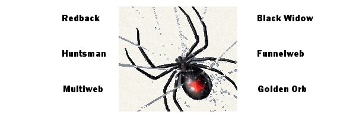

All about ROOter
Background on this Project
The ROOter Project was created to allow the use of USB, PCie and M.2 Cellular modems in routers that don't have this capability using factory firmware. The project produces new firmware on a regular basis that allows you to update your router for better support of these modems and to add new router related features.
ROOter came into being in 2013 because of a simple question asked on the Whirlpool Australia forum : "Can I plug my modem into my router and provide Internet for my entire network? And can I see signal information so I can adjust my antenna for better speeds?". The answer from ROOter was "YES".
Even though ROOter is an international project, with contributions from all over the world, it is mainly a Canadian/Australian collaboration and shows its roots on an Australian forum. The ROOter name was chosen to reflect this and the versions of the firmware have been named after something Australia is famous for, poisonous spiders.

ROOter is made using the Open Source firmware provided by the OpenWrt and Lede projects.
ROOter has been available since April 2013 and has proved to be a popular download for improving routers. Since its inception there have been nearly 1,000,000 firmware downloads of all the different ROOter versions. It has been used in nearly every country in the world, as shown by the ClustrMaps link on the Home page.